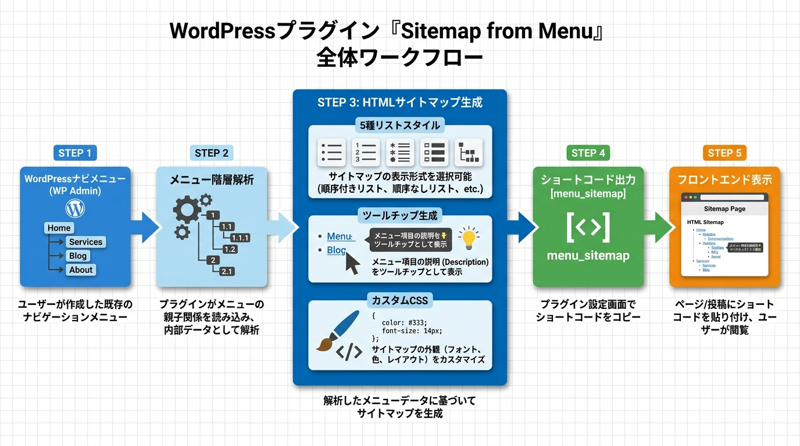

Kashiwazaki SEO Sitemap from Menu マニュアル

Kashiwazaki SEO Sitemap from Menu は、WordPressのナビゲーションメニューからHTML形式のサイトマップを自動生成するプラグインです。5種類のリストスタイルとSEOプラグイン連携のツールチップ機能を備え、ショートコード [menu_sitemap] で簡単にサイトマップを表示できます。
HTMLサイトマップは、XMLサイトマップを補完しユーザーにサイト全体の構造を提示するページです。本プラグインはWordPressのナビゲーションメニューからHTMLサイトマップを自動生成し、5種類のリストスタイルとツールチップ表示に対応します。
主な機能
HTMLサイトマップ
ナビゲーションメニューからHTMLサイトマップを自動生成
5スタイル
箇条書き・丸・四角・なし・ディレクトリツリーの5種類のリストスタイル
ツールチップ
SEOプラグインのメタ説明文をホバー時にツールチップで表示
プラグインの特長
- ナビゲーションメニューの階層構造をそのままHTMLサイトマップとして出力
- 5種類のリストスタイル（箇条書き・丸・四角・なし・ディレクトリツリー）に対応
- Yoast SEO、All in One SEO、Rank Math、SEOPressのメタ説明文をツールチップで表示
- カスタムCSS入力によるスタイルのカスタマイズが可能
- ショートコード
[menu_sitemap]で任意のページにサイトマップを挿入 - フロントエンド: CSSのみ（3.4KB）、JavaScriptなし
- AJAXなし、JSON-LDなし、メタタグなし — 軽量でシンプルな設計

SEO・GEO（生成AI最適化）への効果
XMLサイトマップとの補完関係
HTMLサイトマップは、XMLサイトマップを補完する役割を果たします。XMLサイトマップが検索エンジンのクローラー向けであるのに対し、HTMLサイトマップはユーザーが目視でサイト全体の構造を把握できるナビゲーションを提供します。両方を併用することで、クローラビリティとユーザビリティの両方を向上させます。
ナビゲーション階層との一致
メニューベースの生成により、HTMLサイトマップは実際のナビゲーション階層と常に一致します。メニューを更新すれば自動的にサイトマップも更新されるため、手動でサイトマップを管理する必要がありません。
直帰率の低減
ツールチップでページの説明文を表示することで、ユーザーがリンク先の内容を事前に把握できます。これにより、期待と異なるページへの遷移を防ぎ、直帰率の低減につながります。
SEOプラグインとの連携
Yoast SEO、All in One SEO、Rank Math、SEOPressのメタ説明文を自動取得し、ツールチップとして表示します。SEOプラグインで設定したメタデータを最大限に活用し、一貫性のあるサイト情報を提供します。
生成AI（GEO）への対応
HTMLサイトマップは、AIにサイト全体のコンテンツ構造を構造化された形式で提供します。階層的なリンク一覧により、LLMベースのシステムがサイトのトピック構造や重要ページを効率的に把握できます。
目次（マニュアル構成）
| ページ | 内容 |
|---|---|
| 概要 | プラグインの機能概要、SEO/GEO効果、動作要件 |
| インストール・初期設定 | インストール手順、メニュー選択、リストスタイル設定 |
| サイトマップの使い方 | ショートコードの使い方、ツールチップ設定、カスタムCSS |
| トラブルシューティング | よくある問題と対処法、動作要件、技術仕様、アーキテクチャ |
動作要件
| 項目 | 要件 |
|---|---|
| WordPress | 5.0 以上 |
| PHP | 7.4 以上 |
| 対応ブラウザ | Chrome、Firefox、Safari、Edge（最新版） |
インストール後すぐに使い始めたい場合は、インストール・初期設定ページに進んでください。